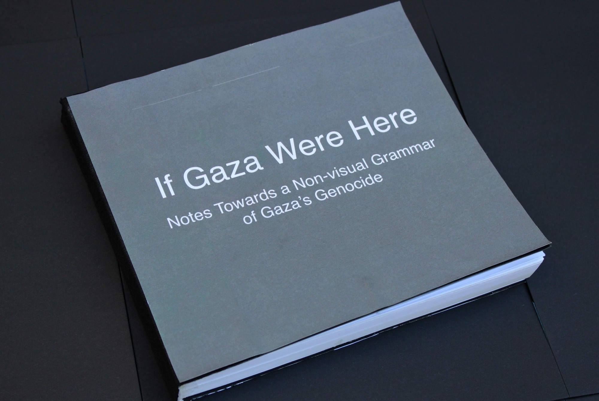
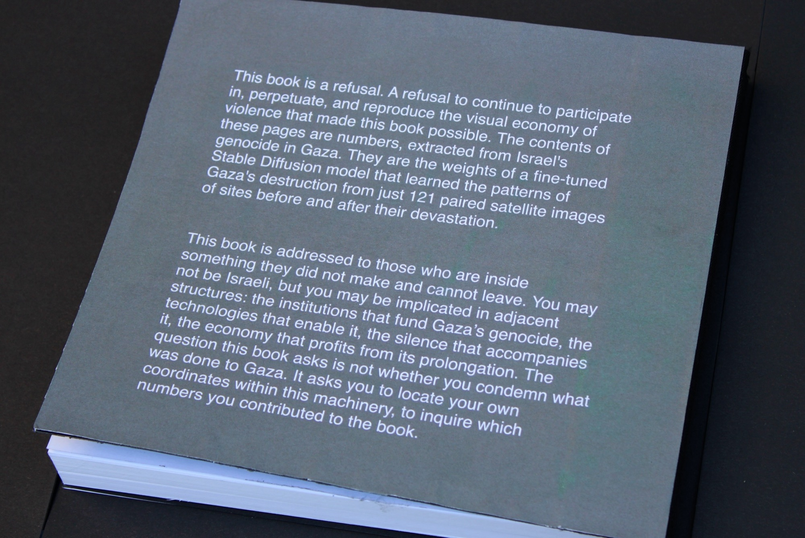

If Gaza Were Here: Notes Towards a Non-visual Grammar of Gaza's Genocide
A custom image-generation model was trained on 121 paired before-and-after satellite photographs of sites destroyed in Gaza by Israel. The book opens with those 121 pairs, followed by the model's complete weight file, printed across the remaining pages as sequential floating-point numbers: the same information the images carry, compressed past legibility, readable only by the machine that produced it.
The book carries no copyright. All proceeds from its circulation are committed in perpetuity to the Sameer Project and Dahnoun Mutual Aid — Palestinian-led mutual aid and medical relief in Gaza.
The book was deposited with the National Library of Israel under the country's legal-deposit statute, which required the Library to accept it into the national collection, where it is now catalogued.
Catalog record, National Library of Israel →
The book grew out of an earlier form of the project: an Instagram account, @ifgazawerehere, that posted the model’s simulations — Israeli landmarks rendered in the visual grammar of Gaza’s destruction. The account remains online.
the earlier Instagram version

